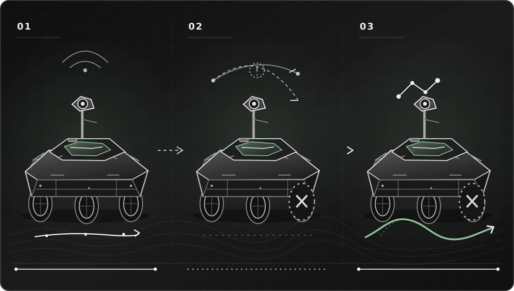
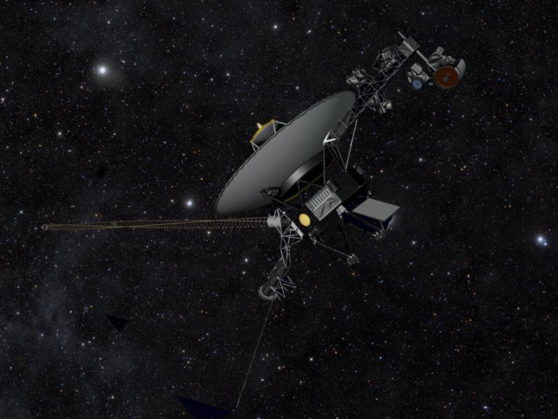

Independent research · Væringjar II
What remains after failure?
When stopping is itself a hazard, a system must assess what it can still do, whether its models remain trustworthy, and when a stable reconfiguration is possible.
Mission cases · Apollo 13, 1970
When a failure does not end the mission
11Missions, from Voyager and Apollo 13 to Hitomi and LINK
Research logic
Capability, model validity and admissible change
- 01MeasureHow much mission capability remains?
- 02ValidateCan the system still trust its own models?
- 03ReconfigureWhen is an architectural change admissible?
S(t) ∈ [0, 1]Mission capability, from zero to one

Implementation · ROS 2 · RISC-V
How the system is reconfigured
6ROS 2 modules, a configuration catalogue and three independent real-time constraints

Evidence
Tested, published, still open
7 + 3Publications and talks

Build the technology with us
Væringjar II is open to scientific dialogue, engineering contribution and experimental partnerships while the scientific and technological foundations are still being formed.